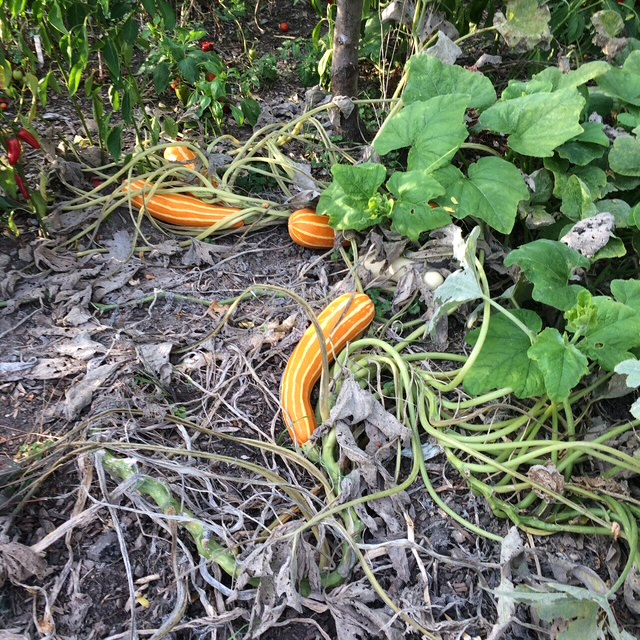

Broccoli Cheddar Soup

Description
I have some veggie water, some corn, and some potatoes I'd like to make a chowder-like soup for. This looks like it will fill the bill.
I got it from my Troy Farm mailer.
Ingredients
- 1 Tbsp butter
- 1 medium yellow onion, finely chopped
- 1/4 cup salted butter
- 1/4 cup all-purpose flour
- 2 cups chicken broth or vegetable broth
- 2 cups half and half
- 12 oz fresh broccoli (I use a 12 oz bag of florets) , roughly chopped
- 2 carrots, peeled and chopped
- 1/2 tsp kosher salt
- 1/4 tsp paprika
- 1/4 tsp garlic powder
- 1/4 tsp dry mustard (can substitute with about 1/2 tsp regular mustard)
- 1/4 tsp black pepper
- 2 cups cheddar cheese
Directions
- Add 1 Tbsp butter to dutch oven and heat over MED heat. Add chopped onion and saute until onions are soft and translucent, about 2-3 minutes. Add 1/4 cup butter to dutch oven, still over MED heat. When melted, add flour and whisk together. Cook mixture for about 1 minute, whisking often.
- Slowly pour in about a cup of chicken broth, whisking as you pour. Continue with remaining chicken broth and half and half, pouring slowly and whisking as you pour.
Let broth/half and half mixture cook for a minute or two, whisking often, making sure no flour lumps remain.
- Add broccoli and carrots and stir to combine. Add paprika, garlic powder, dry mustard, salt and pepper, stir. Reduce heat to LOW/MED LOW and simmer for about 10-15 minutes or until thickened, and broccoli/carrots are fork tender. If the soup gets too thick for your liking, add a splash of chicken broth or half and half to loosen it up.
- Blend soup until desired texture is reached, using either immersion blender or by transferring soup to a traditional blender.
- Add grated cheddar cheese a handful at a time, stirring to melt the cheese into the soup after each handful. Taste soup and season with additional salt and pepper if needed.
- Serve hot with additional black pepper and shredded cheese on top if desired.
Home